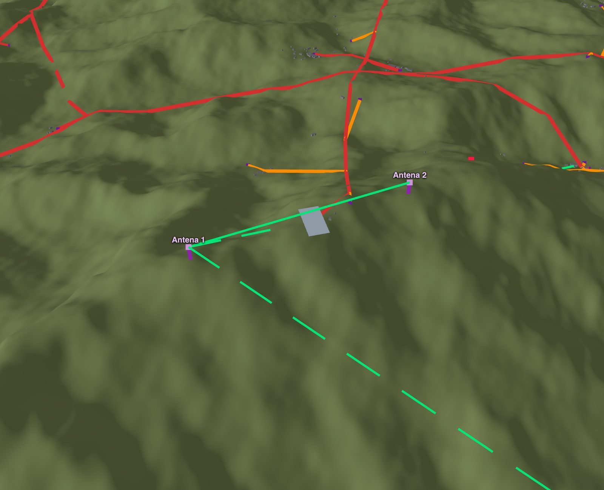
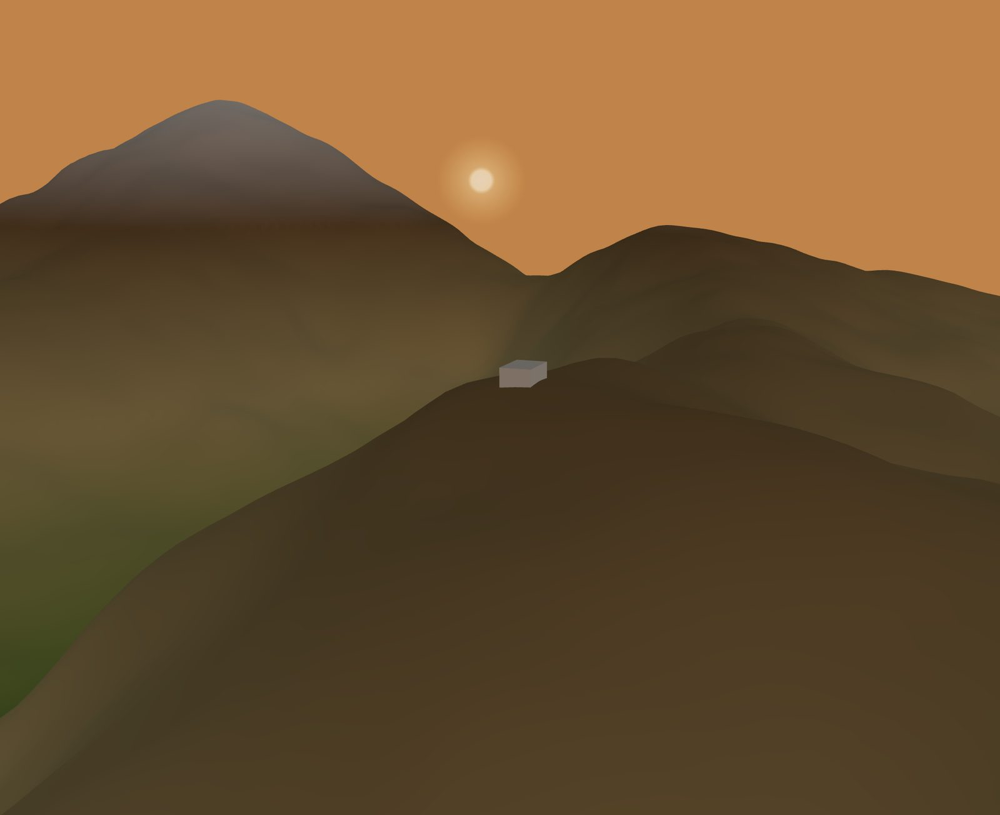
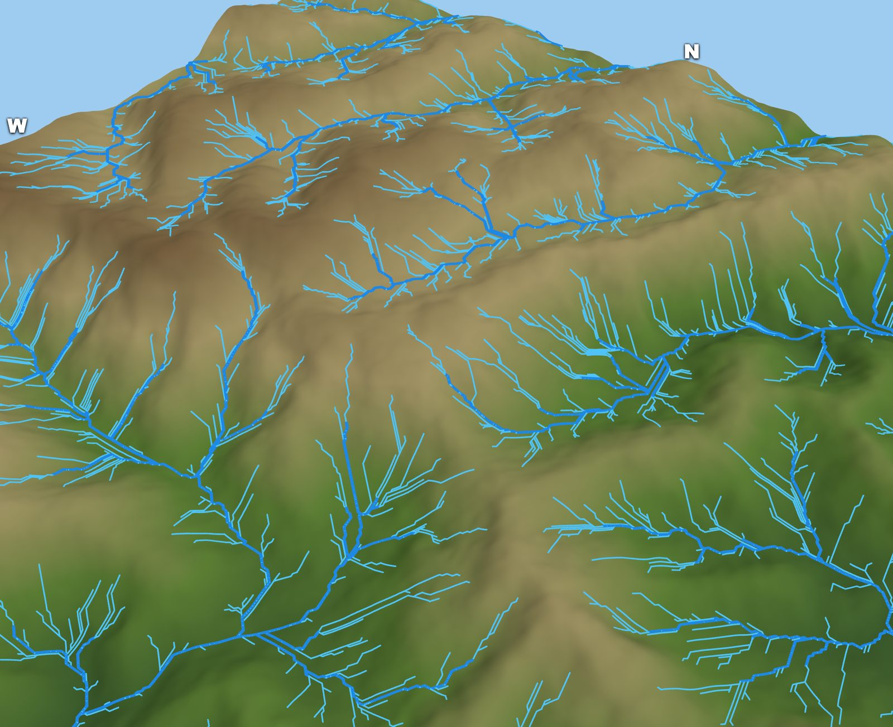
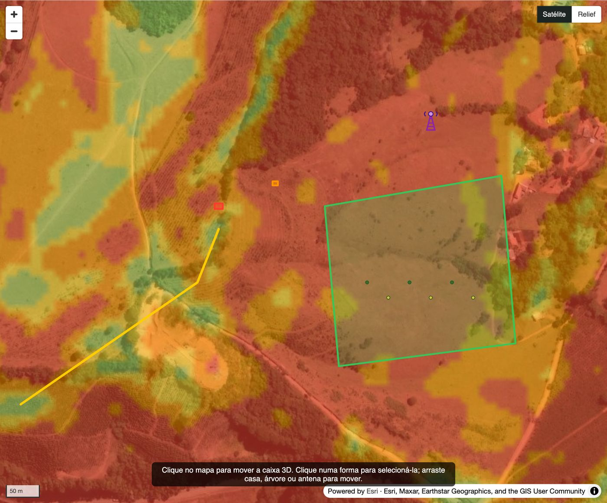
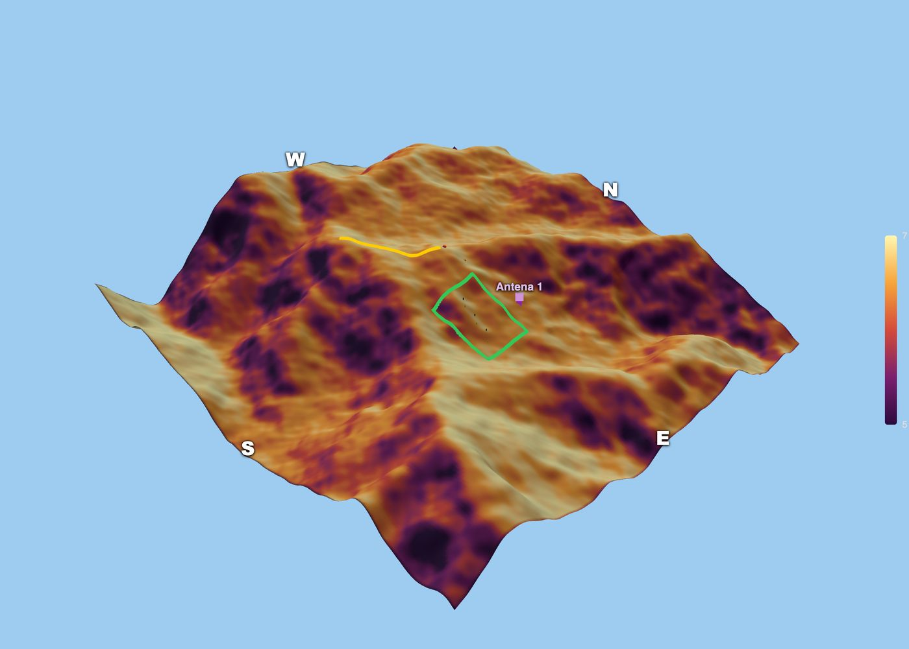
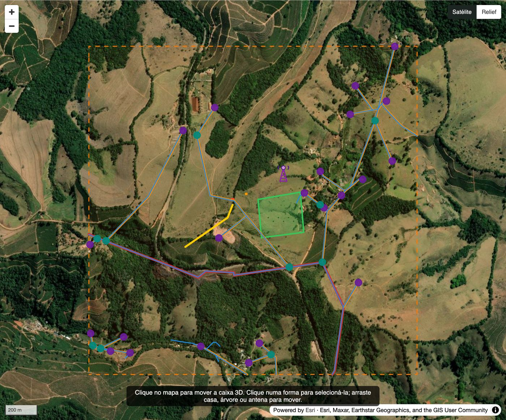
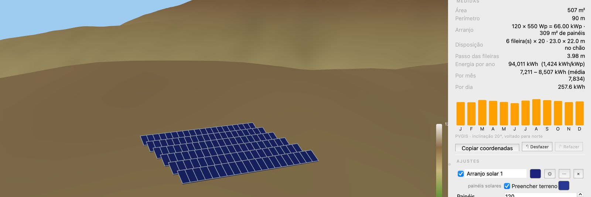
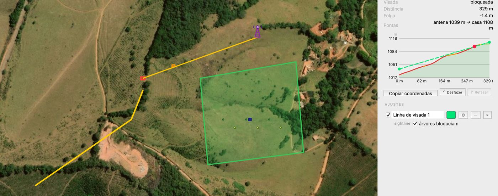

Planeje sua terra sobre o relevo real.
Desenhe casas, estradas, pomares e painéis solares no mapa de satélite e veja tudo em 3D, com declividade, caminhos da água, sol e rede elétrica. Antes de chamar a máquina, saiba onde construir.
Versão beta 0.9.1 · Mac, Windows e Linux · em português e inglês

Tudo o que você olharia andando pela terra
Dados públicos de elevação, satélite, água, sol e rede elétrica, juntos num só plano que você desenha e guarda no seu computador.
O sol em qualquer dia e hora
Escolha a data e a hora e veja o sol iluminar o relevo, do nascer ao pôr do sol. Veja onde a casa no alto do morro pega o último sol da tarde e o que fica na sombra.

Por onde a água corre
Os caminhos da água mostram por onde a chuva escorre e se junta. Veja antes de escolher onde vai a casa, a estrada ou a fossa.

Declividade como a máquina vê
As classes de declividade pintam o chão: verde onde dá para construir e plantar, vermelho onde é íngreme demais e vai exigir corte, muro ou erosão.

Onde bate mais sol
A exposição ao sol, num dia ou na média do ano, mostra as encostas boas para painéis, horta e pomar, e as que ficam na sombra do morro.

A rede elétrica mais perto
Linhas e transformadores da distribuidora, dos dados abertos da ANEEL. O Terreno traça o caminho até a subestação e dá uma faixa de custo para ligar a casa ou a bomba.

Painéis solares que dão conta
Solte um arranjo no mapa, defina quantos painéis e veja as fileiras inclinadas no 3D e quanto geram mês a mês, com dados do PVGIS. O Terreno calcula o tamanho que cobre o seu consumo e os melhores ângulos para aquele ponto.

A antena enxerga a casa?
A linha de visada mostra se o morro bloqueia o sinal, com o perfil do terreno e o ponto exato onde a linha bate.

E mais
Desenhe no satélite
Casas com vários níveis, estradas, áreas, árvores, antenas e arranjos solares. Busque por endereço ou coordenadas em qualquer notação.
Exporte e compartilhe
KML para o Google Earth, GeoJSON para o QGIS, imagens e um relatório em PDF. Importa os limites do Google Earth.
Assistente de IA (opcional)
"Ponha uma casa de 12 × 8 no ponto mais plano do pomar." Funciona com a sua própria chave (Anthropic, OpenAI, OpenRouter) ou com o Ollama no seu computador.
Para planejar, não para construir.
A elevação vem de dados públicos de cerca de 30 m, com erro vertical de alguns metros. Declividades, seções e curvas servem para decidir; antes da terraplenagem, faça o levantamento topográfico.
Baixar o beta
Gratuito. Seus planos ficam no seu computador. É um beta: mande sua opinião pelo próprio app, em Ajuda → Enviar comentário.
Cada instalador tem de 280 a 360 MB. Todas as versões: github.com/carvalhorr/terreno-app/releases
macOS
- Abra o arquivo .dmg e arraste o Terreno para Aplicativos.
- Na primeira vez, clique com o botão direito no Terreno → Abrir → Abrir. O beta ainda não é assinado pela Apple, por isso o aviso de "desenvolvedor não identificado".
- Se não aparecer a opção, vá a Ajustes do Sistema → Privacidade e Segurança → Abrir Mesmo Assim.
Windows
- Descompacte o arquivo .zip numa pasta.
- Abra Terreno.exe.
- Se o Windows mostrar "O Windows protegeu o computador", clique em Mais informações → Executar assim mesmo. O beta ainda não é assinado.
Linux
- Descompacte:
tar xzf Terreno-*.tar.gz - Rode
Terreno/Terreno.
Privacidade
Seus planos são seus
Ficam em arquivos no seu computador. Nada do que você desenha é enviado.
Estatísticas anônimas
Uma vez por dia o app conta, de forma anônima, quais ferramentas foram usadas, a versão e o sistema, para sabermos o que melhorar. Desligue em Editar → Estatísticas de uso.
Comentários só quando você pede
Ajuda → Enviar comentário mostra exatamente o que vai antes de enviar. O plano só vai se você marcar.